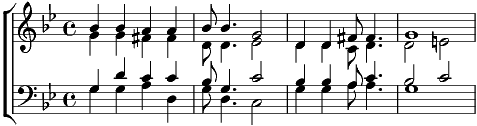

1. Armstrong, je ne suis pas noir,
Je suis blanc de peau
Quand on veut chanter l'espoir,
Quel manque de pot
Oui, j'ai beau voir le ciel, l'oiseau,
Rien, rien, rien ne luit là haut
Les anges... zéro
Je suis blanc de peau
2. Armstrong, tu te fends la poire
On voit toutes tes dents
Moi, je broie plutôt du noir,
Du noir en dedans
Chante pour moi, Louis, oh ! oui
Chante, chante, chante, ça tient chaud
J'ai froid, oh ! moi
Qui suis blanc de peau
3. Armstrong, la vie, quelle histoire !
C'est pas très marrant
Qu'on l'écrive blanc sur noir
Ou bien noir sur blanc,
On voit surtout du rouge, du rouge
Sang, sang, sans trêve ni repos
Qu'on soit, ma foi,
Noir ou blanc de peau
4. Armstrong, un jour, tôt ou tard,
On n'est que des os...
Est ce que les tiens seront noirs ?
Ce serait rigolo
Allez Louis, alléluia !
Au delà de nos oripeaux,
Noir et Blanc
Sont ressemblants
Comme deux gouttes d'eau
Oh Yeah!